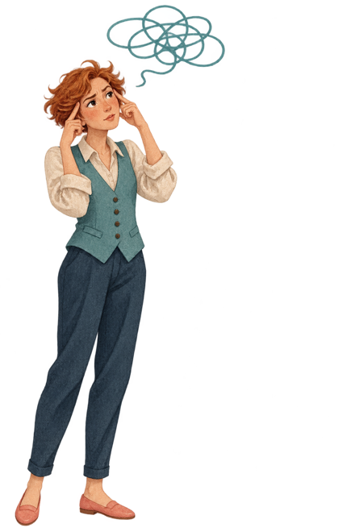
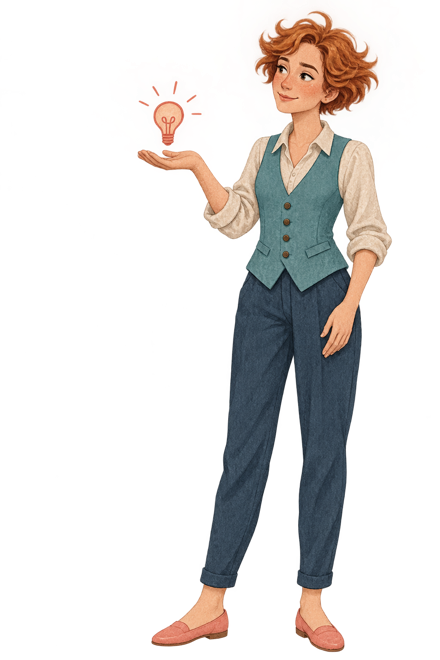

Deux tirages, deux univers — le hasard révèle une seule carte à la fois.

Avant de tirer, pense à une situation, une question ou une tension qui t'occupe en ce moment — un choix, une relation, une émotion qui revient. Le premier tirage éclaire un biais ou un mécanisme psychologique qui peut jouer un rôle dans ce que tu vis ; le second te propose un outil concret pour agir dessus. À elles deux, les cartes du jour t'aident autant à comprendre qu'à avancer.